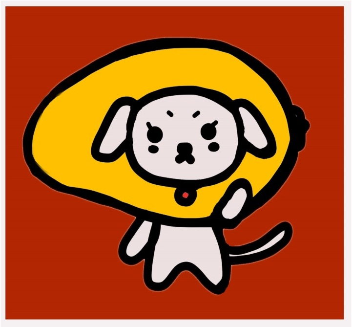

At the end of 2014, JD, a leading e-commerce company in China, proposed the "3F" strategy for rural e-commerce. In early 2016, JD signed the Strategic Cooperation Framework Agreement on Targeted E-Commerce Poverty Alleviation with the State Council Leading Group Office of Poverty Alleviation and Development.
In 2006, our team collaborated with JD to help client the government of Tiandong County, Guangxi, China to develop a digital mobile application to promote their mango products. We designed a module called  Mango Try, which incoporate entertainment features, product sells, product information, and product reviews on JD.com and JD mobile application.
March 2016 - September 2016
While Tiandong County is well known for its mangoes, the local government recognized the need to evolve in the digital age. Embracing technology had become urgent, prompting them to develop a mobile application to promote their mango products and expand their market reach—especially among younger generations.
Through marketing research, we tried to understand target buyers' needs and pain points of online shopping. Most of them concerns centered around the convinience, freshness of products, and the shipping fees.
We put together a set of 5 design principles that our team referred to constantly throughout the project. "Trust and transparency" was one of our most important principles. We wanted to create a sense of trust and transparencybetween users and the product, as many of them were not familiar with the product or lacked of trust in online fresh food markets.
We also designed a interactive game module to encourage users to play, earn credit and cash the reward for products.
We created a details project plan including marketing research and analysis, design, prototyping, and user testing.
Our project won the JD.com Best Design Award in 2016. Judges were highly impressed by our entertainment module and the game design, which made our app more interactive and engaging. They also lauded our attention to detail and users' needs in trust and transparency.
This was a great challenge as it took me on the path to designing for mobile apps, so quite a few lessons were learned. I began involving diverse audiences and accessible features in my designs which has been a journey of learning about their diverse needs. I also began understanding the constraints of creating an app and the layout, which both need thoughtful consideration for all users in order for a great experience to be had.